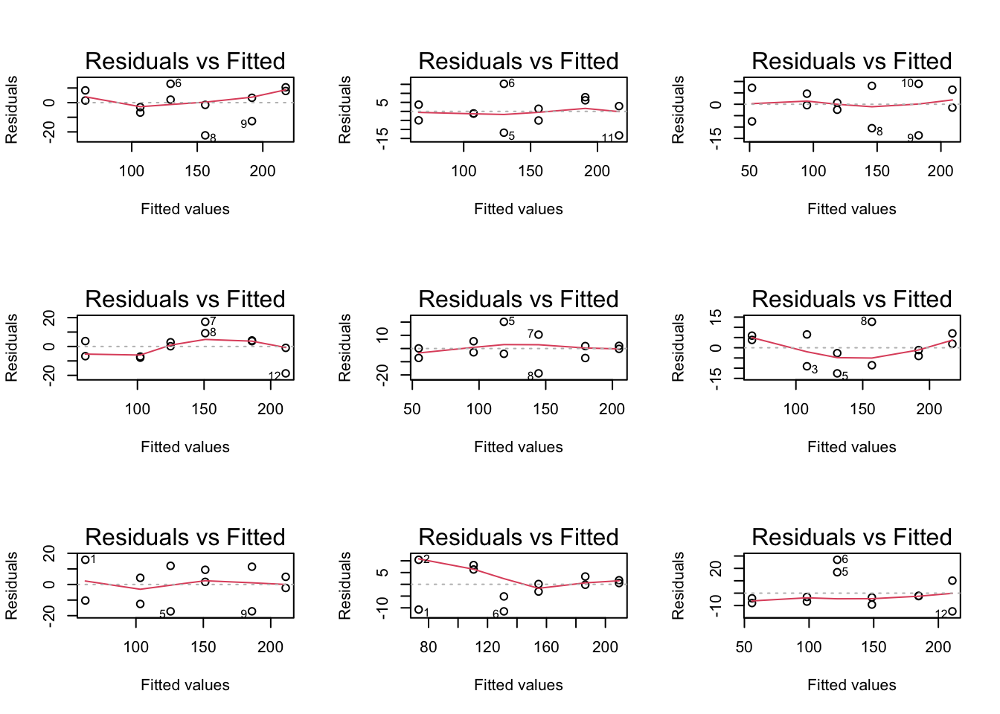

Invloed concentratie op reactiesnelheid
De reactiesnelheid van een proces met een enzyme als katalysator wordt opgemeten door het aantal radioactieve reactieproducten te tellen in functie van de substraatconcentratie. Dat wordt gedaan voor een reactiemengsel met Puromycine en zonder Puromycine.
We willen nagaan of er een lineair verband is tussen de gemiddelde reactiesnelheid en de substraatconcentratie voor zowel de groep die behandeld is met Puromycine als voor de controlegroep zonder Puromicine. Aangezien we de data zouden moeten analyseren met een meervoudige lineaire regressiemodel die het effect van de concentratie en de behandeling kan modelleren, beperken we ons voorlopig tot de data van de groep die behandeld is met Puromycine.
## ── Attaching packages ─────────────────────────────────────── tidyverse 1.3.1 ──
## ✔ ggplot2 3.3.5 ✔ purrr 0.3.4
## ✔ tibble 3.1.4 ✔ dplyr 1.0.7
## ✔ tidyr 1.1.3 ✔ stringr 1.4.0
## ✔ readr 1.4.0 ✔ forcats 0.5.1
## ── Conflicts ────────────────────────────────────────── tidyverse_conflicts() ──
## ✖ dplyr::filter() masks stats::filter()
## ✖ dplyr::lag() masks stats::lag()
data(Puromycin)
Puromycin <- Puromycin %>% filter(state=="treated")
Data exploratie
We plotten de reactiesnelheid tegenover de concentratie om de data te exploreren.
Puromycin %>%
ggplot(aes(x=conc,y=rate)) +
geom_point() +
stat_smooth(method = "loess",col="red") + # fit een kromme door de punten (rode lijn)
stat_smooth(method='lm',col="black") + # fit een rechte door de punten aan de hand van de kleinstekwadratenmethode
ylab("Reactiesnelheid (counts/min)") +
xlab("Substraatconcentratie (ppm)") +
theme_bw()
## `geom_smooth()` using formula 'y ~ x'
## `geom_smooth()` using formula 'y ~ x'
Het ziet ernaar uit dat de data geen lineaire trend volgt. We gaan nu het verband na log-transformatie van de substraatconcentratie. Gezien de substraat concentratie in ppm is gemeten zullen we een log\(_{10}\) transformatie gebruiken (een waarde van -2,-1,0 op log schaal is dan 0.01ppm, 0.1 ppm, 1 ppm).
Puromycin %>%
ggplot(aes(x=conc %>% log10,y=rate)) +
geom_point() +
stat_smooth(method = "loess",col="red") + # fit een kromme door de punten (rode lijn)
stat_smooth(method='lm',col="black") + # fit een rechte door de punten aan de hand van de kleinstekwadratenmethode
ylab("Reactiesnelheid (counts/min)") +
xlab("log10(Substraatconcentratie (ppm))") +
theme_bw()
## `geom_smooth()` using formula 'y ~ x'
## `geom_smooth()` using formula 'y ~ x'
Het verband tussen de reactiesnelheid en het logaritme van de substraatconcentratie lijkt lineair. We zullen de reactiesnelheid dus verder modelleren in functie van de log\(_{10}\)-substraatconcentratie.
Enkelvoudige lineaire regressie
Enkelvoudige lineaire regressie is een regressie waarbij een variabele gemodelleerd wordt in functie van slechts 1 variabele. De verwachtte reactiesnelheid wordt dus \(E[Y_i] = \beta_0 + \beta_1X_i\). In dit geval is \(Y\) de reactiesnelheid en \(X\) de log10-substraatconcentratie.
Het model wordt dan als volgt: \(reactiesnelheid_i = \beta_0 + \beta_1 log_{10}(concentratie_i) + \epsilon_i\)
met \(\beta_0\) het (werkelijke) intercept, \(\beta_1\) de (werkelijke) helling of meer specifiek het (werkelijk) effect van log10(concentratie) op de gemiddelde reactiesnelheid. Deze parameters gaan we schatten.
\(\epsilon_i\) is een foutterm (“error term”), waarbij \(\epsilon_i\) i.i.d. normaal verdeeld zijn met gemiddelde 0 en (constante) variantie \(\sigma^2\).
Assumpties
Voordat we conclusies kunnen trekken uit het lineaire regressiemodel moeten we nagaan of er aan de assumpties voldaan zijn. Voor de lineaire regressie zijn dat volgende assumpties:
- Onafhankelijke gegevens
- Lineariteit tussen respons en predictor (impliceert dat residuen rond nul verdeeld zijn, zonder merkbaar resterend patroon tussen de residuen en de geschatte respons variabele)
- Normaal verdeelde residuen
- Gelijke variantie (homoscedasticiteit)
Onafhankelijke gegevens moeten we veronderstellen uit het experimenteel design. De andere assumpties moeten we controleren.
Lineariteit tussen reactiesnelheid en log\(_{10}\)(substraatconcentratie):
Zoals hierboven besproken lijkt het dat er een lineaire trend is tussen reactiesnelheid en log\(_{10}\)(substraatconcentratie) in het volledige bereik van de data.
De lineariteitsassumptie impliceert dat de residuen willekeurig rond nul verdeeld zijn, onafhankelijk van waar we ons op de rechte bevinden. Dit kunnen we weergeven door een lineair model te fitten op de data en de residuen met een smoother weer te geven in functie van de gefitte responswaarden.
model <- lm(rate~log10(conc),data = Puromycin)
model
##
## Call:
## lm(formula = rate ~ log10(conc), data = Puromycin)
##
## Coefficients:
## (Intercept) log10(conc)
## 209.19 85.45
Er lijken kleine afwijkingen te zijn bij de residuen van hogere gefitted waarden. Er zijn echter niet zoveel observaties opgenomen in de studie en de smoother geeft sowieso onnauwkeurig schattingen op de eindpunten van het bereik.
Om na te gaan of de afwijkingen die we zien inderdaad plaucibel zijn en kunnen worden veroorzaakt door random variabiliteit kunnen we gebruik maken van simulaties waaruit we de data genereren onder de voorwaarden van het lineaire model.
We simuleren 9 datasets met hetzelfde aantal observaties, predictorwaarden, intercept, helling en standaarddeviatie. We fitten de modellen en maken de residuplot.
set.seed(1031)
betas <- model %>% coefficients
sigma <- model %>% sigma
simModels <- list()
par(mfrow=c(3,3))
for (i in 1:9)
{
x <- Puromycin %>% pull("conc") %>% log10
nobs <- Puromycin %>% nrow
y <- betas[1] + betas[2] * x + rnorm(nobs, sd = sigma)
simModels[[i]] <- lm(y~x)
plot(simModels[[i]], which = 1)
}

Normaal verdeelde residuen
We gaan via een qq-plot na of de residuen normaal verdeeld zijn.
We zien dat er geen systematische afwijkingen zijn van normaliteit, en kunnen veronderstellen dat de kleine afwijkingen door toevallige steekproefvariabiliteit komen.
Gelijke variantie (homoscedasticiteit)
Bij lineaire regressie wil de assumptie van gelijkheid van variantie zeggen dat de variantie van de residuen rond de regressierechte hetzelfde is voor elke waarde van de predictor (predictorpatroon).
We kunnen dit opnieuw nagaan met de residu-plot. De spreiding van de residuen zou min of meer gelijk moeten zijn voor elke gefitte waarde.
Een andere plot die we hiervoor kunnen gebruiken is een plot waar we de vierkantswortel van de absolute waarde van de gestandaardiseerde residuen plotten in functie van de gefitte waarden. Als we hier een smoother door trekken, zou de smoother een horizontaal verloop moeten hebben. Indien er afwijkingen zouden zijn, bv. er is een systematische trend waarbij de gestandaardiseerde residuen hoger/lager worden naarmate de fitted values hoger/lager worden, dan betekent het dat de variantie van de residuen hoger/lager wordt naarmate de geschatte respons hoger/lager wordt.
Hier zien we kleine afwijkingen van een horizontale lijn bij de uiterste waarden. Via simulatie zien we opnieuw dat deze afwijkingen plaucibel zijn in een experiment met ons design wanneer alle aannames geldig zijn.
par(mfrow = c(3,3))
for (i in 1:9)
plot(simModels[[i]], which = 3)
We kunnen dus veronderstellen dus dat de varianties gelijk zijn.
Nul- en alternatieve hypothese:
We willen weten of er een lineaire associatie is tussen de reactiesnelheid en de log\(_{10}\) getransformeerde concentratie.
De nul- en alternatieve hypothese van het lineair model worden dus:
\(H_0\): \(\beta_1 = 0\)
\(H_A\): \(\beta_1 \ne 0\)
Met andere woorden stelt de nulhypothese dat er geen associatie is tussen de reactiesnelheid en de log\(_{10}\) concentratie, terwijl de alternatieve hypothese stelt dat er juist wel een associatie is.
Fit het lineair model en bespreek beide parameters, ga na of de nulhypothese verworpen wordt en maak een interpretatie van het betrouwbaarheidsinterval.
summaryModel <- summary(model)
summaryModel
##
## Call:
## lm(formula = rate ~ log10(conc), data = Puromycin)
##
## Residuals:
## Min 1Q Median 3Q Max
## -17.0176 -6.2455 0.6039 7.4262 13.3228
##
## Coefficients:
## Estimate Std. Error t value Pr(>|t|)
## (Intercept) 209.194 5.045 41.47 1.59e-12 ***
## log10(conc) 85.450 5.133 16.65 1.28e-08 ***
## ---
## Signif. codes: 0 '***' 0.001 '**' 0.01 '*' 0.05 '.' 0.1 ' ' 1
##
## Residual standard error: 10.37 on 10 degrees of freedom
## Multiple R-squared: 0.9652, Adjusted R-squared: 0.9617
## F-statistic: 277.1 on 1 and 10 DF, p-value: 1.28e-08
confintModel <- confint(model)
confintModel
## 2.5 % 97.5 %
## (Intercept) 197.95335 220.43564
## log10(conc) 74.01255 96.88732
Conclusie
Er is een extreem significante lineaire associatie tussen de substraatconcentratie op logschaal en de reactiesnelheid (p << 0.001). Wanneer we de reactie laten doorgaan bij een substraatconcentratie die 10 keer hoger is, is de reactiesnelheid gemiddeld met 85.4 counts/min hoger (95% betrouwbaarheidsinterval [74, 96.9] counts/min).
Interpretatie
Het intercept is de geschatte gemiddelde reactiesnelheid bij een log\(_{10}\)-concentratie van 0/een substraat concentratie van 1 ppm en is gelijk aan 209.2 counts/min.
Helling
Log schaal: Wanneer we de reactie laten doorgaan bij een substraatconcentratie die 1 eenheid op log\(_{10}\) schaal hoger is, is de reactiesnelheid gemiddeld met 85.4 counts/min hoger.
Originele schaal: Wanneer we de reactie laten doorgaan bij een substraatconcentratie die 10 keer hoger is, is de reactiesnelheid gemiddeld met 85.4 counts/min hoger.
- 95% betrouwbaarheidsinterval: We hebben dus geschat dat het werkelijke verschil in reactiesnelheid tussen twee reacties die doorgaan onder een substraatconcentratie die een factor 10 verschillen met 95% kans ligt tussen [74, 96.9] counts/min; merk op dat de reactie sneller doorgaat in de reactie met de hoogste substraatconcentratie.
Schat de gemiddelde reactiesnelheid bij een substraat concentratie van 0.2ppm en geef een bijhorend 95%-betrouwbaarheidsinterval.
pred <- predict(model, newdata=data.frame(conc=0.2), interval="confidence")
pred
## fit lwr upr
## 1 149.4676 142.7162 156.2189
De geschatte gemiddelde reactiesnelheid bij een substraatconcentratie van 10 ppm is 149.5 counts/min (95% betrouwbaarheidsinterval [142.7, 156.2] counts/min).
Algemene conclusie
Er is een extreem significante lineaire associatie tussen de substraatconcentratie op logschaal en de reactiesnelheid (p << 0.001). Wanneer we de reactie laten doorgaan bij een substraatconcentratie die 10 keer hoger is, is de reactiesnelheid gemiddeld met 85.4 counts/min hoger (95% betrouwbaarheidsinterval [74, 96.9] counts/min).
LS0tCnRpdGxlOiAiUHJhY3RpY3VtIDE6IE9lZmVuaW5nIDQiCmF1dGhvcjogIkFsZXhhbmRyZSBTZWdlcnMgJiBMaWV2ZW4gQ2xlbWVudCIKZGF0ZTogInN0YXRPbWljcywgR2hlbnQgVW5pdmVyc2l0eSAoaHR0cHM6Ly9zdGF0b21pY3MuZ2l0aHViLmlvKSIKb3V0cHV0OgogICAgaHRtbF9kb2N1bWVudDoKICAgICAgY29kZV9kb3dubG9hZDogdHJ1ZQogICAgICB0aGVtZTogY29zbW8KICAgICAgdG9jOiB0cnVlCiAgICAgIHRvY19mbG9hdDogdHJ1ZQogICAgICBoaWdobGlnaHQ6IHRhbmdvCiAgICAgIG51bWJlcl9zZWN0aW9uczogdHJ1ZQogICAgcGRmX2RvY3VtZW50OgogICAgICB0b2M6IHRydWUKICAgICAgbnVtYmVyX3NlY3Rpb25zOiB0cnVlCmxpbmtjb2xvcjogYmx1ZQp1cmxjb2xvcjogYmx1ZQpjaXRlY29sb3I6IGJsdWUKCi0tLQoKPGEgcmVsPSJsaWNlbnNlIiBocmVmPSJodHRwczovL2NyZWF0aXZlY29tbW9ucy5vcmcvbGljZW5zZXMvYnktbmMtc2EvNC4wIj48aW1nIGFsdD0iQ3JlYXRpdmUgQ29tbW9ucyBMaWNlbnNlIiBzdHlsZT0iYm9yZGVyLXdpZHRoOjAiIHNyYz0iaHR0cHM6Ly9pLmNyZWF0aXZlY29tbW9ucy5vcmcvbC9ieS1uYy1zYS80LjAvODh4MzEucG5nIiAvPjwvYT4KCgpgYGB7ciBzZXR1cCwgaW5jbHVkZT1GQUxTRX0Ka25pdHI6Om9wdHNfY2h1bmskc2V0KGVjaG8gPSBUUlVFKQpgYGAKCiMgSW52bG9lZCBjb25jZW50cmF0aWUgb3AgcmVhY3RpZXNuZWxoZWlkIAoKRGUgcmVhY3RpZXNuZWxoZWlkIHZhbiBlZW4gcHJvY2VzIG1ldCBlZW4gZW56eW1lIGFscyBrYXRhbHlzYXRvciB3b3JkdCBvcGdlbWV0ZW4gZG9vciBoZXQgYWFudGFsIHJhZGlvYWN0aWV2ZSByZWFjdGllcHJvZHVjdGVuIHRlIHRlbGxlbiBpbiBmdW5jdGllIHZhbiBkZSBzdWJzdHJhYXRjb25jZW50cmF0aWUuIERhdCB3b3JkdCBnZWRhYW4gdm9vciBlZW4gcmVhY3RpZW1lbmdzZWwgbWV0IFB1cm9teWNpbmUgZW4gem9uZGVyIFB1cm9teWNpbmUuCgpXZSB3aWxsZW4gbmFnYWFuIG9mIGVyIGVlbiBsaW5lYWlyIHZlcmJhbmQgaXMgdHVzc2VuIGRlIGdlbWlkZGVsZGUgcmVhY3RpZXNuZWxoZWlkIGVuIGRlIHN1YnN0cmFhdGNvbmNlbnRyYXRpZSB2b29yIHpvd2VsIGRlIGdyb2VwIGRpZSBiZWhhbmRlbGQgaXMgbWV0IFB1cm9teWNpbmUgYWxzIHZvb3IgZGUgY29udHJvbGVncm9lcCB6b25kZXIgUHVyb21pY2luZS4gQWFuZ2V6aWVuIHdlIGRlIGRhdGEgem91ZGVuIG1vZXRlbiBhbmFseXNlcmVuIG1ldCBlZW4gbWVlcnZvdWRpZ2UgbGluZWFpcmUgcmVncmVzc2llbW9kZWwgZGllIGhldCBlZmZlY3QgdmFuIGRlIGNvbmNlbnRyYXRpZSBlbiBkZSBiZWhhbmRlbGluZyBrYW4gbW9kZWxsZXJlbiwgYmVwZXJrZW4gd2Ugb25zIHZvb3Jsb3BpZyB0b3QgZGUgZGF0YSB2YW4gZGUgZ3JvZXAgZGllIGJlaGFuZGVsZCBpcyBtZXQgUHVyb215Y2luZS4KCmBgYHtyfQpsaWJyYXJ5KHRpZHl2ZXJzZSkKbGlicmFyeShnZ3Bsb3QyKQpgYGAKCmBgYHtyfQpkYXRhKFB1cm9teWNpbikKUHVyb215Y2luIDwtIFB1cm9teWNpbiAlPiUgZmlsdGVyKHN0YXRlPT0idHJlYXRlZCIpCgpgYGAKCiMgRGF0YSBleHBsb3JhdGllCgpXZSBwbG90dGVuIGRlIHJlYWN0aWVzbmVsaGVpZCB0ZWdlbm92ZXIgZGUgY29uY2VudHJhdGllIG9tIGRlIGRhdGEgdGUgZXhwbG9yZXJlbi4KYGBge3J9ClB1cm9teWNpbiAgJT4lCiAgZ2dwbG90KGFlcyh4PWNvbmMseT1yYXRlKSkgKwogIGdlb21fcG9pbnQoKSArIAogIHN0YXRfc21vb3RoKG1ldGhvZCA9ICJsb2VzcyIsY29sPSJyZWQiKSArICMgZml0IGVlbiBrcm9tbWUgZG9vciBkZSBwdW50ZW4gKHJvZGUgbGlqbikKICBzdGF0X3Ntb290aChtZXRob2Q9J2xtJyxjb2w9ImJsYWNrIikgKyAjIGZpdCBlZW4gcmVjaHRlIGRvb3IgZGUgcHVudGVuIGFhbiBkZSBoYW5kIHZhbiBkZSBrbGVpbnN0ZWt3YWRyYXRlbm1ldGhvZGUKICB5bGFiKCJSZWFjdGllc25lbGhlaWQgKGNvdW50cy9taW4pIikgKwogIHhsYWIoIlN1YnN0cmFhdGNvbmNlbnRyYXRpZSAocHBtKSIpICsKICB0aGVtZV9idygpCmBgYAoKSGV0IHppZXQgZXJuYWFyIHVpdCBkYXQgZGUgZGF0YSBnZWVuIGxpbmVhaXJlIHRyZW5kIHZvbGd0LiBXZSBnYWFuIG51IGhldCB2ZXJiYW5kIG5hIGxvZy10cmFuc2Zvcm1hdGllIHZhbiBkZSBzdWJzdHJhYXRjb25jZW50cmF0aWUuIEdlemllbiBkZSBzdWJzdHJhYXQgY29uY2VudHJhdGllIGluIHBwbSBpcyBnZW1ldGVuIHp1bGxlbiB3ZSBlZW4gbG9nJF97MTB9JCB0cmFuc2Zvcm1hdGllIGdlYnJ1aWtlbiAoZWVuIHdhYXJkZSB2YW4gLTIsLTEsMCBvcCBsb2cgc2NoYWFsIGlzIGRhbiAwLjAxcHBtLCAwLjEgcHBtLCAxIHBwbSkuIAoKCmBgYHtyfQpQdXJvbXljaW4gICU+JQogIGdncGxvdChhZXMoeD1jb25jICU+JSBsb2cxMCx5PXJhdGUpKSArCiAgZ2VvbV9wb2ludCgpICsgCiAgc3RhdF9zbW9vdGgobWV0aG9kID0gImxvZXNzIixjb2w9InJlZCIpICsgIyBmaXQgZWVuIGtyb21tZSBkb29yIGRlIHB1bnRlbiAocm9kZSBsaWpuKQogIHN0YXRfc21vb3RoKG1ldGhvZD0nbG0nLGNvbD0iYmxhY2siKSArICMgZml0IGVlbiByZWNodGUgZG9vciBkZSBwdW50ZW4gYWFuIGRlIGhhbmQgdmFuIGRlIGtsZWluc3Rla3dhZHJhdGVubWV0aG9kZQogIHlsYWIoIlJlYWN0aWVzbmVsaGVpZCAoY291bnRzL21pbikiKSArCiAgeGxhYigibG9nMTAoU3Vic3RyYWF0Y29uY2VudHJhdGllIChwcG0pKSIpICsKICB0aGVtZV9idygpCmBgYAoKSGV0IHZlcmJhbmQgdHVzc2VuIGRlIHJlYWN0aWVzbmVsaGVpZCBlbiBoZXQgbG9nYXJpdG1lIHZhbiBkZSBzdWJzdHJhYXRjb25jZW50cmF0aWUgbGlqa3QgbGluZWFpci4gV2UgenVsbGVuIGRlIHJlYWN0aWVzbmVsaGVpZCBkdXMgdmVyZGVyIG1vZGVsbGVyZW4gaW4gZnVuY3RpZSB2YW4gZGUgbG9nJF97MTB9JC1zdWJzdHJhYXRjb25jZW50cmF0aWUuCgojIEVua2Vsdm91ZGlnZSBsaW5lYWlyZSByZWdyZXNzaWUKCkVua2Vsdm91ZGlnZSBsaW5lYWlyZSByZWdyZXNzaWUgaXMgZWVuIHJlZ3Jlc3NpZSB3YWFyYmlqIGVlbiB2YXJpYWJlbGUgZ2Vtb2RlbGxlZXJkIHdvcmR0IGluIGZ1bmN0aWUgdmFuIHNsZWNodHMgMSB2YXJpYWJlbGUuIERlIHZlcndhY2h0dGUgcmVhY3RpZXNuZWxoZWlkIHdvcmR0IGR1cyAkRVtZX2ldID0gXGJldGFfMCArIFxiZXRhXzFYX2kkLiBJbiBkaXQgZ2V2YWwgaXMgJFkkIGRlIHJlYWN0aWVzbmVsaGVpZCBlbiAkWCQgZGUgbG9nMTAtc3Vic3RyYWF0Y29uY2VudHJhdGllLgoKSGV0IG1vZGVsIHdvcmR0IGRhbiBhbHMgdm9sZ3Q6CiRyZWFjdGllc25lbGhlaWRfaSA9IFxiZXRhXzAgKyBcYmV0YV8xIGxvZ197MTB9KGNvbmNlbnRyYXRpZV9pKSArIFxlcHNpbG9uX2kkCgptZXQgJFxiZXRhXzAkIGhldCAod2Vya2VsaWprZSkgKippbnRlcmNlcHQqKiwgJFxiZXRhXzEkIGRlICh3ZXJrZWxpamtlKSAqKmhlbGxpbmcqKiBvZiBtZWVyIHNwZWNpZmllayBoZXQgKHdlcmtlbGlqaykgKiplZmZlY3QgdmFuIGxvZzEwKGNvbmNlbnRyYXRpZSkgb3AgZGUgZ2VtaWRkZWxkZSByZWFjdGllc25lbGhlaWQqKi4gRGV6ZSBwYXJhbWV0ZXJzIGdhYW4gd2Ugc2NoYXR0ZW4uCgokXGVwc2lsb25faSQgaXMgZWVuIGZvdXR0ZXJtICgiZXJyb3IgdGVybSIpLCB3YWFyYmlqICRcZXBzaWxvbl9pJCBpLmkuZC4gbm9ybWFhbCB2ZXJkZWVsZCB6aWpuIG1ldCBnZW1pZGRlbGRlIDAgZW4gKGNvbnN0YW50ZSkgdmFyaWFudGllICRcc2lnbWFeMiQuCgojIyBBc3N1bXB0aWVzCgpWb29yZGF0IHdlIGNvbmNsdXNpZXMga3VubmVuIHRyZWtrZW4gdWl0IGhldCBsaW5lYWlyZSByZWdyZXNzaWVtb2RlbCBtb2V0ZW4gd2UgbmFnYWFuIG9mIGVyIGFhbiBkZSBhc3N1bXB0aWVzIHZvbGRhYW4gemlqbi4gVm9vciBkZSBsaW5lYWlyZSByZWdyZXNzaWUgemlqbiBkYXQgdm9sZ2VuZGUgYXNzdW1wdGllczoKCiAxLiBPbmFmaGFua2VsaWprZSBnZWdldmVucwogMi4gTGluZWFyaXRlaXQgdHVzc2VuIHJlc3BvbnMgZW4gcHJlZGljdG9yIChpbXBsaWNlZXJ0IGRhdCByZXNpZHVlbiByb25kIG51bCB2ZXJkZWVsZCB6aWpuLCB6b25kZXIgbWVya2JhYXIgcmVzdGVyZW5kIHBhdHJvb24gdHVzc2VuIGRlIHJlc2lkdWVuIGVuIGRlIGdlc2NoYXR0ZSByZXNwb25zIHZhcmlhYmVsZSkKIDMuIE5vcm1hYWwgdmVyZGVlbGRlIHJlc2lkdWVuCiA0LiBHZWxpamtlIHZhcmlhbnRpZSAoaG9tb3NjZWRhc3RpY2l0ZWl0KQogCiBPbmFmaGFua2VsaWprZSBnZWdldmVucyBtb2V0ZW4gd2UgdmVyb25kZXJzdGVsbGVuIHVpdCBoZXQgZXhwZXJpbWVudGVlbCBkZXNpZ24uIERlIGFuZGVyZSBhc3N1bXB0aWVzIG1vZXRlbiB3ZSBjb250cm9sZXJlbi4KIAojIyMgTGluZWFyaXRlaXQgdHVzc2VuIHJlYWN0aWVzbmVsaGVpZCBlbiBsb2ckX3sxMH0kKHN1YnN0cmFhdGNvbmNlbnRyYXRpZSk6Cgpab2FscyBoaWVyYm92ZW4gYmVzcHJva2VuIGxpamt0IGhldCBkYXQgZXIgZWVuIGxpbmVhaXJlIHRyZW5kIGlzIHR1c3NlbiByZWFjdGllc25lbGhlaWQgZW4gbG9nJF97MTB9JChzdWJzdHJhYXRjb25jZW50cmF0aWUpIGluIGhldCB2b2xsZWRpZ2UgYmVyZWlrIHZhbiBkZSBkYXRhLiAKCkRlIGxpbmVhcml0ZWl0c2Fzc3VtcHRpZSBpbXBsaWNlZXJ0IGRhdCBkZSByZXNpZHVlbiB3aWxsZWtldXJpZyByb25kIG51bCB2ZXJkZWVsZCB6aWpuLCBvbmFmaGFua2VsaWprIHZhbiB3YWFyIHdlIG9ucyBvcCBkZSByZWNodGUgYmV2aW5kZW4uIERpdCBrdW5uZW4gd2Ugd2VlcmdldmVuIGRvb3IgZWVuIGxpbmVhaXIgbW9kZWwgdGUgZml0dGVuIG9wIGRlIGRhdGEgZW4gZGUgcmVzaWR1ZW4gbWV0IGVlbiBzbW9vdGhlciB3ZWVyIHRlIGdldmVuIGluIGZ1bmN0aWUgdmFuIGRlIGdlZml0dGUgcmVzcG9uc3dhYXJkZW4uIAoKYGBge3J9Cm1vZGVsIDwtIGxtKHJhdGV+bG9nMTAoY29uYyksZGF0YSA9IFB1cm9teWNpbikgCm1vZGVsCnBsb3QobW9kZWwsd2hpY2g9MSkKYGBgIAoKRXIgbGlqa2VuIGtsZWluZSBhZndpamtpbmdlbiB0ZSB6aWpuIGJpaiBkZSByZXNpZHVlbiB2YW4gaG9nZXJlIGdlZml0dGVkIHdhYXJkZW4uIEVyIHppam4gZWNodGVyIG5pZXQgem92ZWVsIG9ic2VydmF0aWVzIG9wZ2Vub21lbiBpbiBkZSBzdHVkaWUgZW4gZGUgc21vb3RoZXIgZ2VlZnQgc293aWVzbyBvbm5hdXdrZXVyaWcgc2NoYXR0aW5nZW4gb3AgZGUgZWluZHB1bnRlbiB2YW4gaGV0IGJlcmVpay4gCgpPbSBuYSB0ZSBnYWFuIG9mIGRlIGFmd2lqa2luZ2VuIGRpZSB3ZSB6aWVuIGluZGVyZGFhZCBwbGF1Y2liZWwgemlqbiBlbiBrdW5uZW4gd29yZGVuIHZlcm9vcnphYWt0IGRvb3IgcmFuZG9tIHZhcmlhYmlsaXRlaXQga3VubmVuIHdlIGdlYnJ1aWsgbWFrZW4gdmFuIHNpbXVsYXRpZXMgd2FhcnVpdCB3ZSBkZSBkYXRhIGdlbmVyZXJlbiBvbmRlciBkZSB2b29yd2FhcmRlbiB2YW4gaGV0IGxpbmVhaXJlIG1vZGVsLiAKCldlIHNpbXVsZXJlbiA5IGRhdGFzZXRzIG1ldCBoZXR6ZWxmZGUgYWFudGFsIG9ic2VydmF0aWVzLCBwcmVkaWN0b3J3YWFyZGVuLCBpbnRlcmNlcHQsIGhlbGxpbmcgZW4gc3RhbmRhYXJkZGV2aWF0aWUuIApXZSBmaXR0ZW4gZGUgbW9kZWxsZW4gZW4gbWFrZW4gZGUgcmVzaWR1cGxvdC4gCgpgYGB7cn0Kc2V0LnNlZWQoMTAzMSkKYmV0YXMgPC0gbW9kZWwgJT4lIGNvZWZmaWNpZW50cwpzaWdtYSA8LSBtb2RlbCAlPiUgc2lnbWEgCgpzaW1Nb2RlbHMgPC0gbGlzdCgpCgpwYXIobWZyb3c9YygzLDMpKQpmb3IgKGkgaW4gMTo5KQp7CiAgeCA8LSBQdXJvbXljaW4gJT4lIHB1bGwoImNvbmMiKSAlPiUgbG9nMTAKICBub2JzIDwtIFB1cm9teWNpbiAlPiUgbnJvdwogIHkgPC0gYmV0YXNbMV0gKyBiZXRhc1syXSAqIHggKyBybm9ybShub2JzLCBzZCA9IHNpZ21hKQogIHNpbU1vZGVsc1tbaV1dIDwtIGxtKHl+eCkKICBwbG90KHNpbU1vZGVsc1tbaV1dLCB3aGljaCA9IDEpCn0KYGBgCgojIyMgTm9ybWFhbCB2ZXJkZWVsZGUgcmVzaWR1ZW4KCldlIGdhYW4gdmlhIGVlbiBxcS1wbG90IG5hIG9mIGRlIHJlc2lkdWVuIG5vcm1hYWwgdmVyZGVlbGQgemlqbi4KCmBgYHtyfQpwbG90KG1vZGVsLHdoaWNoPTIpCmBgYAoKV2UgemllbiBkYXQgZXIgZ2VlbiBzeXN0ZW1hdGlzY2hlIGFmd2lqa2luZ2VuIHppam4gdmFuIG5vcm1hbGl0ZWl0LCBlbiBrdW5uZW4gdmVyb25kZXJzdGVsbGVuIGRhdCBkZSBrbGVpbmUgYWZ3aWpraW5nZW4gZG9vciB0b2V2YWxsaWdlIHN0ZWVrcHJvZWZ2YXJpYWJpbGl0ZWl0IGtvbWVuLgoKIyMjIEdlbGlqa2UgdmFyaWFudGllIChob21vc2NlZGFzdGljaXRlaXQpCgpCaWogbGluZWFpcmUgcmVncmVzc2llIHdpbCBkZSBhc3N1bXB0aWUgdmFuIGdlbGlqa2hlaWQgdmFuIHZhcmlhbnRpZSB6ZWdnZW4gZGF0IGRlIHZhcmlhbnRpZSB2YW4gZGUgcmVzaWR1ZW4gcm9uZCBkZSByZWdyZXNzaWVyZWNodGUgaGV0emVsZmRlIGlzIHZvb3IgZWxrZSB3YWFyZGUgdmFuIGRlIHByZWRpY3RvciAocHJlZGljdG9ycGF0cm9vbikuIAoKV2Uga3VubmVuIGRpdCBvcG5pZXV3IG5hZ2FhbiBtZXQgZGUgcmVzaWR1LXBsb3QuIERlIHNwcmVpZGluZyB2YW4gZGUgcmVzaWR1ZW4gem91IG1pbiBvZiBtZWVyIGdlbGlqayBtb2V0ZW4gemlqbiB2b29yIGVsa2UgZ2VmaXR0ZSB3YWFyZGUuIAoKRWVuIGFuZGVyZSBwbG90IGRpZSB3ZSBoaWVydm9vciBrdW5uZW4gZ2VicnVpa2VuIGlzIGVlbiBwbG90IHdhYXIgd2UgZGUgdmllcmthbnRzd29ydGVsIHZhbiBkZSBhYnNvbHV0ZSB3YWFyZGUgdmFuIGRlIGdlc3RhbmRhYXJkaXNlZXJkZSByZXNpZHVlbiBwbG90dGVuIGluIGZ1bmN0aWUgdmFuIGRlIGdlZml0dGUgd2FhcmRlbi4gQWxzIHdlIGhpZXIgZWVuIHNtb290aGVyIGRvb3IgdHJla2tlbiwgem91IGRlIHNtb290aGVyIGVlbiBob3Jpem9udGFhbCB2ZXJsb29wIG1vZXRlbiBoZWJiZW4uIEluZGllbiBlciBhZndpamtpbmdlbiB6b3VkZW4gemlqbiwgYnYuIGVyIGlzIGVlbiBzeXN0ZW1hdGlzY2hlIHRyZW5kIHdhYXJiaWogZGUgZ2VzdGFuZGFhcmRpc2VlcmRlIHJlc2lkdWVuIGhvZ2VyL2xhZ2VyIHdvcmRlbiBuYWFybWF0ZSBkZSAqZml0dGVkIHZhbHVlcyogaG9nZXIvbGFnZXIgd29yZGVuLCBkYW4gYmV0ZWtlbnQgaGV0IGRhdCBkZSB2YXJpYW50aWUgdmFuIGRlIHJlc2lkdWVuIGhvZ2VyL2xhZ2VyIHdvcmR0IG5hYXJtYXRlIGRlIGdlc2NoYXR0ZSByZXNwb25zIGhvZ2VyL2xhZ2VyIHdvcmR0LgoKYGBge3J9CnBsb3QobW9kZWwsd2hpY2g9MykKYGBgCgpIaWVyIHppZW4gd2Uga2xlaW5lIGFmd2lqa2luZ2VuIHZhbiBlZW4gaG9yaXpvbnRhbGUgbGlqbiBiaWogZGUgdWl0ZXJzdGUgd2FhcmRlbi4gVmlhIHNpbXVsYXRpZSB6aWVuIHdlIG9wbmlldXcgZGF0IGRlemUgYWZ3aWpraW5nZW4gcGxhdWNpYmVsIHppam4gaW4gZWVuIGV4cGVyaW1lbnQgbWV0IG9ucyBkZXNpZ24gd2FubmVlciBhbGxlIGFhbm5hbWVzIGdlbGRpZyB6aWpuLiAKCmBgYHtyfQpwYXIobWZyb3cgPSBjKDMsMykpCmZvciAoaSBpbiAxOjkpCiAgcGxvdChzaW1Nb2RlbHNbW2ldXSwgd2hpY2ggPSAzKQpgYGAKCldlIGt1bm5lbiBkdXMgdmVyb25kZXJzdGVsbGVuIGR1cyBkYXQgZGUgdmFyaWFudGllcyBnZWxpamsgemlqbi4KCgoKCiMjIE51bC0gZW4gYWx0ZXJuYXRpZXZlIGh5cG90aGVzZToKCldlIHdpbGxlbiB3ZXRlbiBvZiBlciBlZW4gbGluZWFpcmUgYXNzb2NpYXRpZSBpcyB0dXNzZW4gZGUgcmVhY3RpZXNuZWxoZWlkIGVuIGRlIGxvZyRfezEwfSQgZ2V0cmFuc2Zvcm1lZXJkZSBjb25jZW50cmF0aWUuIAoKRGUgbnVsLSBlbiBhbHRlcm5hdGlldmUgaHlwb3RoZXNlIHZhbiBoZXQgbGluZWFpciBtb2RlbCB3b3JkZW4gZHVzOgoKJEhfMCQ6ICRcYmV0YV8xID0gMCQKIAokSF9BJDogJFxiZXRhXzEgXG5lIDAkIAoKTWV0IGFuZGVyZSB3b29yZGVuIHN0ZWx0IGRlIG51bGh5cG90aGVzZSBkYXQgZXIgZ2VlbiBhc3NvY2lhdGllIGlzIHR1c3NlbiBkZSByZWFjdGllc25lbGhlaWQgZW4gZGUgbG9nJF97MTB9JCBjb25jZW50cmF0aWUsIHRlcndpamwgZGUgYWx0ZXJuYXRpZXZlIGh5cG90aGVzZSBzdGVsdCBkYXQgZXIganVpc3Qgd2VsIGVlbiBhc3NvY2lhdGllIGlzLgoKIyMgRml0IGhldCBsaW5lYWlyIG1vZGVsIGVuIGJlc3ByZWVrIGJlaWRlIHBhcmFtZXRlcnMsIGdhIG5hIG9mIGRlIG51bGh5cG90aGVzZSB2ZXJ3b3JwZW4gd29yZHQgZW4gbWFhayBlZW4gaW50ZXJwcmV0YXRpZSB2YW4gaGV0IGJldHJvdXdiYWFyaGVpZHNpbnRlcnZhbC4KCmBgYHtyfQpzdW1tYXJ5TW9kZWwgPC0gc3VtbWFyeShtb2RlbCkKc3VtbWFyeU1vZGVsCgpgYGAKCmBgYHtyfQpjb25maW50TW9kZWwgPC0gY29uZmludChtb2RlbCkKY29uZmludE1vZGVsCmBgYAoKIyMjIENvbmNsdXNpZSAKCkVyIGlzIGVlbiBleHRyZWVtIHNpZ25pZmljYW50ZSBsaW5lYWlyZSBhc3NvY2lhdGllIHR1c3NlbiBkZSBzdWJzdHJhYXRjb25jZW50cmF0aWUgb3AgbG9nc2NoYWFsIGVuIGRlIHJlYWN0aWVzbmVsaGVpZCAocCA8PCAwLjAwMSkuIFdhbm5lZXIgd2UgZGUgcmVhY3RpZSBsYXRlbiBkb29yZ2FhbiBiaWogZWVuIHN1YnN0cmFhdGNvbmNlbnRyYXRpZSBkaWUgMTAga2VlciBob2dlciBpcywgaXMgIGRlIHJlYWN0aWVzbmVsaGVpZCBnZW1pZGRlbGQgbWV0IGByIHJvdW5kKG1vZGVsJGNvZWZbMl0sMSlgIGNvdW50cy9taW4gaG9nZXIgKDk1JSBiZXRyb3V3YmFhcmhlaWRzaW50ZXJ2YWwgW2ByIHJvdW5kKGNvbmZpbnRNb2RlbFsyXSwxKWAsIGByIHJvdW5kKGNvbmZpbnRNb2RlbFs0XSwxKWBdIGNvdW50cy9taW4pLiAKCgojIyMgSW50ZXJwcmV0YXRpZSAKCjEuIEhldCBpbnRlcmNlcHQgaXMgZGUgZ2VzY2hhdHRlIGdlbWlkZGVsZGUgcmVhY3RpZXNuZWxoZWlkIGJpaiBlZW4gbG9nJF97MTB9JC1jb25jZW50cmF0aWUgdmFuIDAvZWVuIHN1YnN0cmFhdCBjb25jZW50cmF0aWUgdmFuIDEgcHBtIGVuIGlzIGdlbGlqayBhYW4gYHIgcm91bmQobW9kZWwkY29lZmZpY2llbnRzWzFdLDEpYCBjb3VudHMvbWluLgoKMi4gSGVsbGluZwogIAogIC0gTG9nIHNjaGFhbDogIFdhbm5lZXIgd2UgZGUgcmVhY3RpZSBsYXRlbiBkb29yZ2FhbiBiaWogZWVuIHN1YnN0cmFhdGNvbmNlbnRyYXRpZSBkaWUgMSBlZW5oZWlkIG9wIGxvZyRfezEwfSQgc2NoYWFsIGhvZ2VyIGlzLCBpcyAgZGUgcmVhY3RpZXNuZWxoZWlkIGdlbWlkZGVsZCBtZXQgYHIgcm91bmQobW9kZWwkY29lZlsyXSwxKWAgY291bnRzL21pbiBob2dlci4KICAKICAtIE9yaWdpbmVsZSBzY2hhYWw6IFdhbm5lZXIgd2UgZGUgcmVhY3RpZSBsYXRlbiBkb29yZ2FhbiBiaWogZWVuIHN1YnN0cmFhdGNvbmNlbnRyYXRpZSBkaWUgMTAga2VlciBob2dlciBpcywgaXMgIGRlIHJlYWN0aWVzbmVsaGVpZCBnZW1pZGRlbGQgbWV0IGByIHJvdW5kKG1vZGVsJGNvZWZbMl0sMSlgIGNvdW50cy9taW4gaG9nZXIuCgozLiA5NSUgYmV0cm91d2JhYXJoZWlkc2ludGVydmFsOiBXZSBoZWJiZW4gZHVzIGdlc2NoYXQgZGF0IGhldCB3ZXJrZWxpamtlIHZlcnNjaGlsIGluIHJlYWN0aWVzbmVsaGVpZCB0dXNzZW4gdHdlZSByZWFjdGllcyBkaWUgZG9vcmdhYW4gb25kZXIgZWVuIHN1YnN0cmFhdGNvbmNlbnRyYXRpZSBkaWUgZWVuIGZhY3RvciAxMCB2ZXJzY2hpbGxlbiBtZXQgOTUlIGthbnMgbGlndCB0dXNzZW4gIFtgciByb3VuZChjb25maW50TW9kZWxbMl0sMSlgLCBgciByb3VuZChjb25maW50TW9kZWxbNF0sMSlgXSBjb3VudHMvbWluOyBtZXJrIG9wIGRhdCBkZSByZWFjdGllIHNuZWxsZXIgZG9vcmdhYXQgaW4gZGUgcmVhY3RpZSBtZXQgZGUgaG9vZ3N0ZSBzdWJzdHJhYXRjb25jZW50cmF0aWUuIAogCiMjIFNjaGF0IGRlIGdlbWlkZGVsZGUgcmVhY3RpZXNuZWxoZWlkIGJpaiBlZW4gc3Vic3RyYWF0IGNvbmNlbnRyYXRpZSB2YW4gMC4ycHBtIGVuIGdlZWYgZWVuIGJpamhvcmVuZCA5NSUtYmV0cm91d2JhYXJoZWlkc2ludGVydmFsLgoKYGBge3J9CnByZWQgPC0gcHJlZGljdChtb2RlbCwgbmV3ZGF0YT1kYXRhLmZyYW1lKGNvbmM9MC4yKSwgaW50ZXJ2YWw9ImNvbmZpZGVuY2UiKQpwcmVkCmBgYAoKRGUgZ2VzY2hhdHRlIGdlbWlkZGVsZGUgcmVhY3RpZXNuZWxoZWlkIGJpaiBlZW4gc3Vic3RyYWF0Y29uY2VudHJhdGllIHZhbiAxMCBwcG0gIGlzIGByIHJvdW5kKHByZWRbMV0sMSlgIGNvdW50cy9taW4gKDk1JSBiZXRyb3V3YmFhcmhlaWRzaW50ZXJ2YWwgW2ByIHJvdW5kKHByZWRbMjozXSwxKWBdIGNvdW50cy9taW4pLgoKIyBBbGdlbWVuZSBjb25jbHVzaWUKCkVyIGlzIGVlbiBleHRyZWVtIHNpZ25pZmljYW50ZSBsaW5lYWlyZSBhc3NvY2lhdGllIHR1c3NlbiBkZSBzdWJzdHJhYXRjb25jZW50cmF0aWUgb3AgbG9nc2NoYWFsIGVuIGRlIHJlYWN0aWVzbmVsaGVpZCAocCA8PCAwLjAwMSkuIFdhbm5lZXIgd2UgZGUgcmVhY3RpZSBsYXRlbiBkb29yZ2FhbiBiaWogZWVuIHN1YnN0cmFhdGNvbmNlbnRyYXRpZSBkaWUgMTAga2VlciBob2dlciBpcywgaXMgIGRlIHJlYWN0aWVzbmVsaGVpZCBnZW1pZGRlbGQgbWV0IGByIHJvdW5kKG1vZGVsJGNvZWZbMl0sMSlgIGNvdW50cy9taW4gaG9nZXIgKDk1JSBiZXRyb3V3YmFhcmhlaWRzaW50ZXJ2YWwgW2ByIHJvdW5kKGNvbmZpbnRNb2RlbFsyXSwxKWAsIGByIHJvdW5kKGNvbmZpbnRNb2RlbFs0XSwxKWBdIGNvdW50cy9taW4pLiAKCgoK